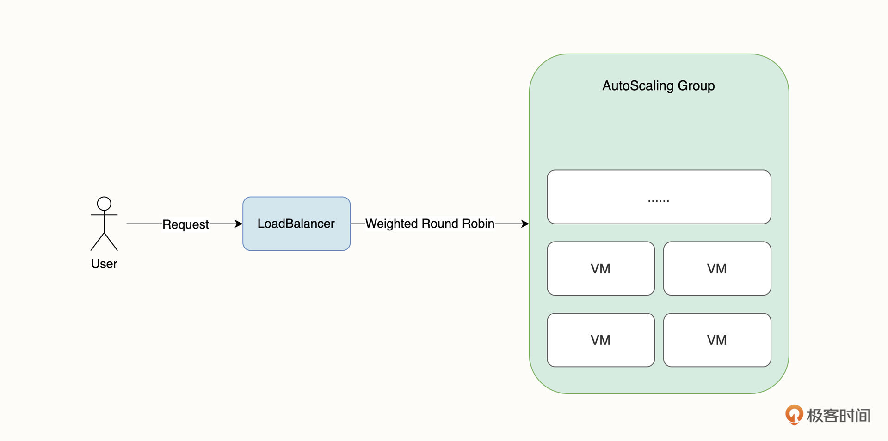
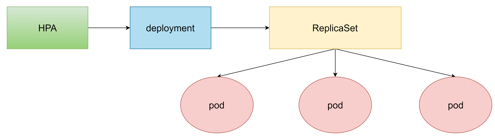
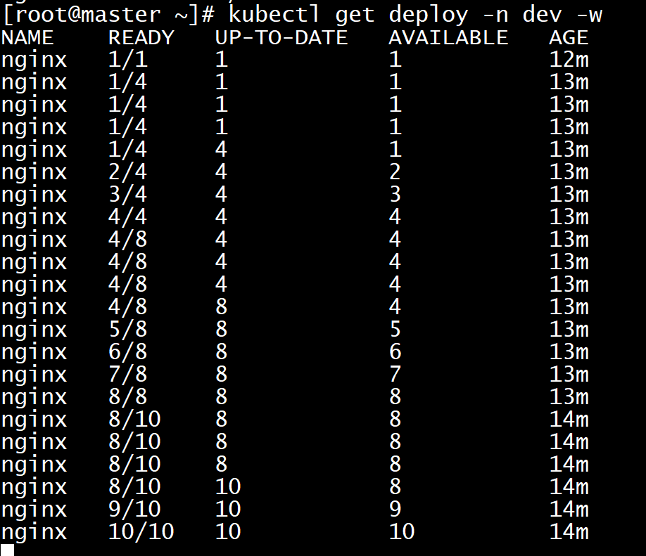
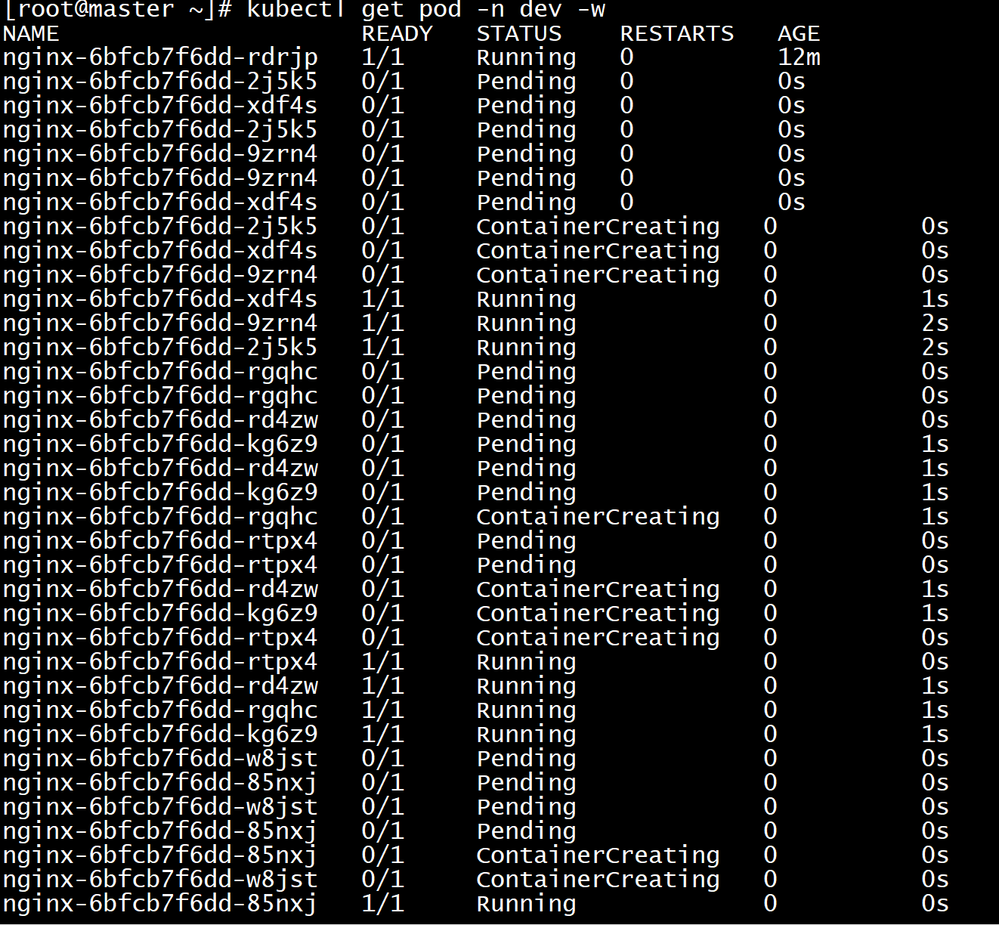
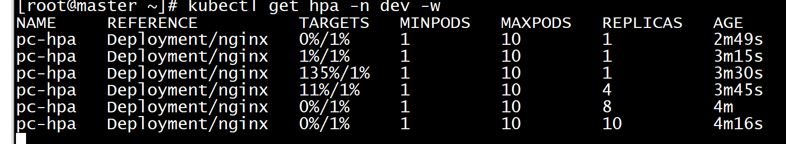
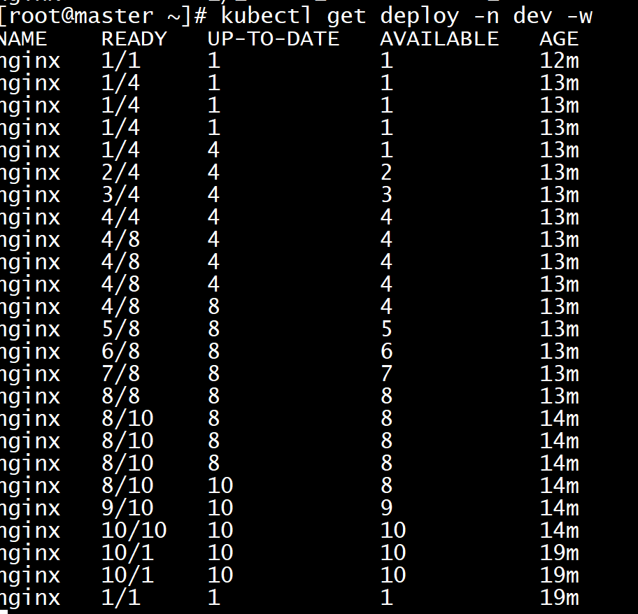
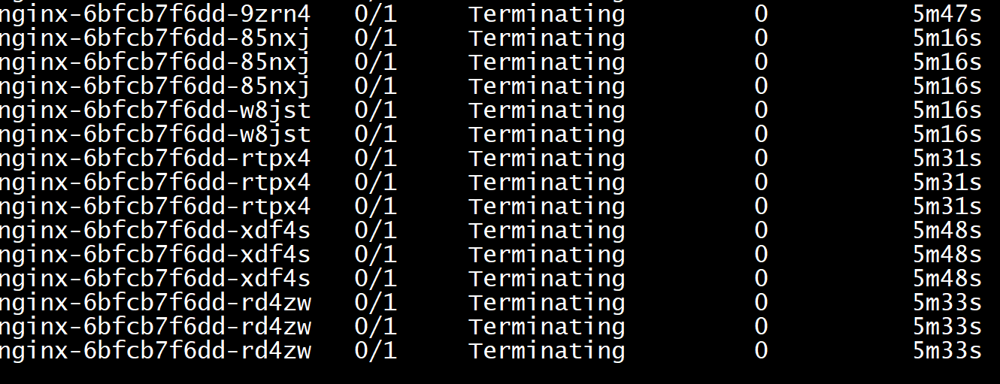

Horizontal Pod Autoscaler(HPA)
传统的扩容和自愈
在 VM 时代，我们的业务以进程的方式运行在虚拟机上，并由虚拟机对外提供服务。随着业务规模的扩大，我们需要支撑更多的访问流量，这时业务扩容就成了首先要考虑的问题。
在公有云环境下，VM 架构最典型的一种扩容方式是 弹性伸缩组。 意思是通过对虚拟机内存、CPU 等监控指标配置伸缩阈值，实现动态地自动伸缩。此外，我们一般还会结合虚拟机镜像、负载均衡器等云产品一并使用，如下图所示。

在这个架构中，负载均衡器是集群的唯一入口，它在接受访问流量后，一般会将流量通过加权轮训的方式转发到后端集群。负载均衡器一般是直接使用云厂商的产品，有一些团队也会自建高可用的 Nginx 作为集群入口。为了保证伸缩组节点的业务一致性，弹性伸缩组的所有 VM 都使用同一个虚拟机镜像。
其次，要在 VM 粒度实现业务自愈，常见的方案是使用 Crontab 定时检查业务进程或者通过守护进程的方式来运行，例如 Node PM2。
传统扩容和自愈的缺点
但是，这种架构有一些显而易见的缺陷。最大的问题有两个：
- 扩容慢；
- 负载均衡无法感知业务健康情况。
扩容慢主要体现在两方面。首先是 VM 指标会有一定的延迟；其次，扩容的 VM 冷启动时间比较慢，弹性伸缩组需要执行购买 VM、配置镜像、加入伸缩组、启动 VM 等操作。这会让我们失去扩容的最佳时机，并最终影响用户体验。
负载均衡无法感知业务健康情况的意思是，VM 是否加入到弹性伸缩组接收外部流量，一般取决于 VM 的健康状态，但 VM 健康并不等于业务健康，这导致在扩缩容的过程中，请求仍然有可能会转发至业务不健康的节点，造成业务短暂中断的问题。
水平扩容（HPA）
K8s是如何解决这两个问题的呢。
kubectl scale，可以任意增减Deployment部署的Pod数量，也就是水平方向的“扩容”和“缩容”。但是手动调整应用实例数量还是比较麻烦的，需要人工参与，也很难准确把握时机，难以及时应对生产环境中突发的大流量，所以最好能把这个“扩容”“缩容”也变成自动化的操作。
Kubernetes为此就定义了一个新的API对象，叫做“HorizontalPodAutoscaler”，简称是“hpa”。顾名思义，它是专门用来自动伸缩Pod数量的对象，适用于Deployment和StatefulSet，但它不能作用在无法缩放的工作负载上，比如 Daemonset。以 Deployment 为例，HPA 主要实现了对 Deployment 工作负载 Replicas 字段的控制，进而通过控制 ReplicasSet 对 Pod 进行缩放操作。
HorizontalPodAutoscaler的能力完全基于Metrics Server，它从Metrics Server获取当前应用的运行指标，主要是CPU使用率，再依据预定的策略增加或者减少Pod的数量。要使 HPA 生效， 有两个必要的条件，分别是安装 Metrics Server和为工作负载配置资源 Request。
HPA 的原理是，每隔一段时间在指标 API 里查询 Pod 的资源用量，然后和HPA中定义的指标进行对比，同时计算出需要伸缩的具体值，最后实现pod数量的调整。
其实HPA与之前的Deployment一样，也属于一种k8s资源对象，它通过追踪分析目标pod的负载变化情况，来确定是否需要针对性地调整目标pod的副本数。
说白了，就相当于你有10个pod在运行，但是pod利用率只有10%，那么HPA会根据指标自动给你删除其他不需要的pod。

安装metrics-server
metrics-server可以用来收集集群中的资源使用情况。
获取metrics-server,可以直接访问Github进行获取，自行从Github上获取注意版本号。Github地址
kubectl apply -f https://github.com/kubernetes-sigs/metrics-server/releases/latest/download/components.yaml
[root@master pod]# kubectl apply -f components.yaml
serviceaccount/metrics-server created
clusterrole.rbac.authorization.k8s.io/system:aggregated-metrics-reader created
clusterrole.rbac.authorization.k8s.io/system:metrics-server created
rolebinding.rbac.authorization.k8s.io/metrics-server-auth-reader created
clusterrolebinding.rbac.authorization.k8s.io/metrics-server:system:auth-delegator created
clusterrolebinding.rbac.authorization.k8s.io/system:metrics-server created
service/metrics-server created
deployment.apps/metrics-server created
apiservice.apiregistration.k8s.io/v1beta1.metrics.k8s.io created
条件满足后，我们就可以配置 HPA 策略了。在生产环境下，通常我们会基于两个指标来定义 HPA 策略，它们分别是 CPU 和内存使用率。
使用 HPA
- 准备deployment和service
用 Deployment 来创建一个 Nginx Pod
创建hpa-nginx.yaml
apiVersion: apps/v1 # 版本号
kind: Deployment # 类型
metadata: # 元数据
name: nginx # deployment的名称
namespace: dev
spec: # 详细描述
selector: # 选择器，通过它指定该控制器可以管理哪些Pod
matchLabels: # Labels匹配规则
app: nginx-pod
template: # 模块 当副本数据不足的时候，会根据下面的模板创建Pod副本
metadata:
labels:
app: nginx-pod
spec:
containers:
- name: nginx # 容器名称
image: nginx:1.17.1 # 容器需要的镜像地址
ports:
- containerPort: 80 # 容器所监听的端口
protocol: TCP
resources: # 资源限制
requests:
memory: "50Mi"
cpu: "100m" # 100m表示100millicpu，即0.1个CPU
hpa-service.yaml
apiVersion: v1 # 版本号
kind: Service # 类型
metadata: # 元数据
name: hpa-nginx #名称
namespace: dev
spec: # 详细描述
selector:
app: nginx-pod
ports:
- port: 80
protocol: TCP
nodePort: 30002
targetPort: 80
type: NodePort
#创建deployment
[root@master 1.8+]# kubectl create -f hpa-nginx.yaml
#创建service
[root@master pod]# kubectl create -f hpa-service.yaml
service/hpa-nginx created
#查看
[root@master ~]# kubectl get deploy,pod,svc -n dev
NAME READY UP-TO-DATE AVAILABLE AGE
deployment.apps/nginx 1/1 1 1 11s
deployment.apps/pc-deployment 3/3 3 3 100m
NAME READY STATUS RESTARTS AGE
pod/nginx 1/1 Running 0 10m
pod/nginx-679bdbcc5b-rpzc9 1/1 Running 0 11s
NAME TYPE CLUSTER-IP EXTERNAL-IP PORT(S) AGE
service/nginx NodePort 10.96.65.124 <none> 80:30002/TCP 5s
[root@master pod]# kubectl get pod -n dev -o wide
NAME READY STATUS RESTARTS AGE IP NODE NOMINATED NODE READINESS GATES
nginx-6bfcb7f6dd-rdrjp 1/1 Running 0 7m27s 10.244.1.47 node1 <none> <none>
访问node1的ip加30002，http://192.168.200.102:30002/ 能正确访问到nginx
- 部署HPA
创建 ngx-hpa.yaml
apiVersion: autoscaling/v2
kind: HorizontalPodAutoscaler
metadata:
name: ngx-hpa
namespace: dev
spec:
minReplicas: 1 #最小pod数量
maxReplicas: 10 #最大pod数量
scaleTargetRef: #指定要控制的nginx信息
apiVersion: apps/v1
kind: Deployment
name: nginx
metrics:
- type: Resource
resource:
name: cpu
target:
type: Utilization # 利用率
averageUtilization: 80 # 平均 CPU 利用率达到 80% 之后
- type: Resource
resource:
name: memory
target:
type: Utilization
averageUtilization: 50
[root@master pod]# kubectl create -f pc-hpa.yaml
horizontalpodautoscaler.autoscaling/pc-hpa created
[root@master pod]# kubectl get hpa -n dev
NAME REFERENCE TARGETS MINPODS MAXPODS REPLICAS AGE
pc-hpa Deployment/nginx <unknown>/3% 1 10 0 5s
- hpa压力测试
新建三个窗口，分别监听 hpa，deploy，pod
kubectl get deploy -n dev -w
kubectl get pod -n dev -w
kubectl get hpa -n dev -w
压力测试
package k8s
import (
"fmt"
"net/http"
"testing"
)
func Test_k8s(t *testing.T) {
for i := 0; i < 10000; i++ {
go func() {
// ip : master Ip
// port: svc暴露给我们的port
resp, err := http.Get("http://192.168.200.102:30002")
if err != nil {
fmt.Println(err)
} else {
fmt.Println(resp)
}
}()
}
select {}
}
或者使用 ab 命令创建并发请求：
# ab -c 50 -n 10000 http://127.0.0.1:5000/
在这条压力测试的命令中，-c 代表 50 个并发数，-n 代表一共请求 10000 次，整个过程大概会持续十几秒。
查看监控



可以发现由于pod使用率的增加，pod在不断地被创建，最后总共创建了10个pod，即我们设置的最大阈值。
压力测试结束之后，在等几分钟，再次查看pod的情况，可以发现，大约10分钟之后，由于pod使用率降低，pod在不断地被删除，最后只剩一个pod

